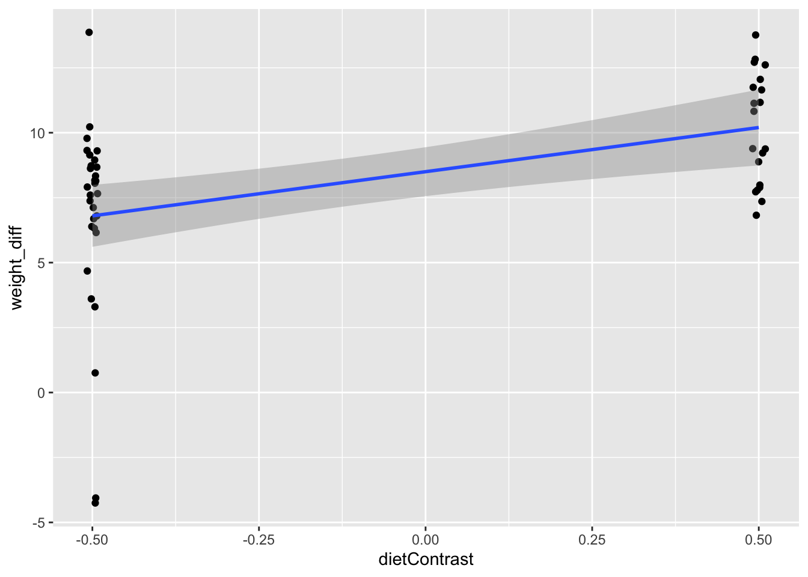

Chapter 4 Within-Participant Analysis
There are lots of situations where we might have multiple measures of the same units of analysis. We could imagine measure a car’s efficiency, and then making an upgrade to the engine, and measuring its efficiency after the upgrade. Perhaps we could test a tutoring intervention by giving students a test on a topic, allowing them to get tutored, and then measuring their knowledge post-tutoring session.
To be precise, we typically think of independent variables as either varying within participants or between participants. Variables that vary within participants imply more than one measurement of a variable. In the tutoring example, students had to take the test twice, once before and once after the tutoring session. We could describe our analysis this way:
We examined student test scores by timepoint (before tutoring vs. after tutoring), which varied within partipants.
In contrast, variables that vary between participants have only one value for each person/unit. Consider modifying the tutoring study. Let’s make it an experiment in which participants are randomly assigned to receive tutoring or not. Then we give the test to all students. Some students have the value “tutored” on the condition variable, while others have the value “control.” We would describe our analysis of this between-student variable this way:
We examined student test scores by condition (tutored vs. control), which varied between participants.
There are also mixed designs, where some factors (i.e., variables) vary between participants and some vary within. UPWARD is a mixed design. The primary indepedent variable in UPWARD was condition. Some participants were assigned to receive Mindfulness-Based Cognitive Therapy (MBCT) while other were assigned to Usual Care (UC). However, participants were also measure on several outcomes at many different timepoints. Participants completed the PHQ-9 many times so that the researchers knew their depressive symptom burden across the course of the study. If we analyze both time and condition, we could describe the analysis this way:
We analyzed depressive symptom burden via PHQ-9 scores in a 2 (time: pre-intervention vs. post-intervention) x 2 (condition: MBCT vs. UC) analysis, with the first factor varying within participants and the second varying between.
This kind of description is very common. The numbers refer to how many levels there are in a factor (i.e., variable) in the design. The “x” can be read as “by,” so the statement could be rephrased this way: “Our analysis was a 2 by 2 design.”
We are going to unpack all of this as we go through this chapter.
4.1 Example: Chick Weights
For the example in this chapter, we will focus on the ChickWeight dataset. To keep things simple, we are going to focus on only two timepoints in the dataset. The chunk below selects the rows we want and puts the data in wide form. For each chick, we are interested in its weight at birth and on day 2 of it’s life.
chick = ChickWeight %>%
filter(Time %in% 0:2) %>%
pivot_wider(
names_from = 'Time',
names_prefix = 'weight_',
values_from = 'weight',
id_cols = c('Chick', 'Diet')
) %>%
mutate(
Diet = ifelse(
Diet %in% 1:2,
1,
2
)
)In this study, researchers measured the weight of baby chickens (chicks) many times. They also varied the diet that those chicks consumed. The study included facotrs that varied both within chicks (time) and between chicks (diet; there were 4 diets in the original data but we will collapse that to 2 diets to keep things simple). Here’s what the first few rows of the data look like:
chick %>%
head() %>%
flextable()Chick | Diet | weight_0 | weight_2 |
|---|---|---|---|
1 | 1 | 42 | 51 |
2 | 1 | 40 | 49 |
3 | 1 | 43 | 39 |
4 | 1 | 42 | 49 |
5 | 1 | 41 | 42 |
6 | 1 | 41 | 49 |
4.2 Computing Difference Scores
Our primary interest is whether chicks weigh more, on average, on day 2 than on day 0. We have all the tools we need to answer this question from Chapter 3, with one exception.
Notice that in the regression chapter, we had a single variable, MPG, as the outcome. Here, we have two variables we are dealing with: a weight on day 0, and a weight on day 2 (weight_0 and weight_2 respectively).
What we really want is a variable that shows the extent to which a chick weighs more on day 2 than on day 0. It is simple to calculate this variable: we simply subtract weight_0 from weight_2 for each chick. Take a look at the result:
chick_2 = chick %>%
mutate(
weight_diff = weight_2 - weight_0
)
chick_2 %>%
head() %>% flextable()Chick | Diet | weight_0 | weight_2 | weight_diff |
|---|---|---|---|---|
1 | 1 | 42 | 51 | 9 |
2 | 1 | 40 | 49 | 9 |
3 | 1 | 43 | 39 | -4 |
4 | 1 | 42 | 49 | 7 |
5 | 1 | 41 | 42 | 1 |
6 | 1 | 41 | 49 | 8 |
We can see that the first chick weighed 9 grams more on day 2 than on day 1. The second chick also weighed 9 grams more on day 2 than 0. The third chick weighed 4 grams less on day 2 than on day 0. We know this because the difference is negative; that only occurs if we subtract a larger number from a smaller one.
It might seem obvious, but it is worth remembering these rules for interpreting difference scores:
- Positive numbers indicate growth, i.e., larger scores on the second variable than on the first.
- Zero indicates no change at all. The two numbers are equal.
- Negative numbers indicate shrinking, i.e., the first number is larger than the second.
Note that these rules depend on subtracting in a particular direction. Carefully choose your subraction direction based on the situation of your analysis.
4.3 Using Regression
Let’s analyze our chick weight difference scores. We use a slightly different syntax in the following model call. jNotice that the model I specify is weight_diff ~ 1. The “1” tells R that we do not have any variables we are using as predictors, but that it should still estimate an intercept for our model.
wt_diff_model = lm(
weight_diff ~ 1,
data = chick_2
)
lmSummary(wt_diff_model)##
## Call:
## lm(formula = weight_diff ~ 1, data = chick_2)
##
## Residuals:
## Min 1Q Median 3Q Max
## -12.16 -1.16 -0.16 1.59 5.84
##
## Coefficients:
## Estimate Std. Error t value f value R^2 Pr(>|t|)
## (Intercept) 8.160 0.513 15.907 253.032 0.838 <2e-16 ***
## ---
## Signif. codes: 0 '***' 0.001 '**' 0.01 '*' 0.05 '.' 0.1 ' ' 1
##
## Residual standard error: 3.627 on 49 degrees of freedomLet’s apply our mantras for interpretting regression. We only have an intercept, so here is the interpretation:
On average, chicks weighed 8.16 grams more on day 2 than on day 0, \(b = 8.16, F(1, 49) = 253.03, p < .001\)
That’s it! In the case of only 2 measurements, difference scores are straightforward to analyze. We simply take the mean of a difference score (via an intercept in regression), statistically test it against zero, and interpret accordingly.
4.4 Important Aside: Contrast & Dummy Codes
Recall that our chicks were fed one of two diets, labelled diet 1 and diet 2. We might want to know if chicks on one of those diets grew more than chicks on another diet. Notice that with our regression strategy, we need all our variables to be represented as numbers. In this particular dataset, the diets are already represented as numbers, but there’s at least two reason we want to recode. First, we want to choose clever values for our codes so that our regression output is asking specific questions of our data. Second, not all datasets come pre-coded with values; many will have character strings or boolean values (TRUE/FALSE) that encode condition, and we’ll need to replace them anyway.
Let’s see how many people we have in each condition:
chick_2 %>% count(Diet) %>%
flextable()Diet | n |
|---|---|
1 | 30 |
2 | 20 |
We will use two different coding schemes: contrast codes and dummy codes. The primary difference in these coding schemes is where zero ends up. That’s critical for any analysis in which we want to interpret the intercept.5
4.4.1 Contrast coding scheme for diet
\[ dietContrast = \begin{cases} -.5 & \quad \text{if diet 1}\\ +.5 & \quad \text{if diet 2} \end{cases} \]
To make this happen, here is a common coding motif that works well for recoding.
chick_3 <- chick_2 %>%
mutate(
dietContrast = -.5 * (Diet==1) + .5 * (Diet==2)
)This code works because both of the expressions in parenthese, (Diet==1) and (Diet==2), actually evaluate to logical vectors (try this code in your console if you are curious: ChickWeight$Diet==1). That’s why the double-equals sign is there. A TRUE value to a computer is equivalent to 1, where a FALSE value is equivalent to zero. By multiplying our codes against this vector of TRUE/FALSE or 0/1, we end up with the code when the expression is true and a 0 when the expression is false. Adding them together, each row will get the right value.
Zero, in this scheme, falls approximately at the average of our chicks. This depends somewhat on how balanced our dataset is. In this case, we have 20 chicks in one condition and 30 in the other, so it won’t be precisely the average. But it is close enough to ask the statistical question, “is the intercept different from zero for chicks on average?”
4.4.2 Dummy coding scheme for diet
For dummy coding schemes, we always assign one of the groups to zero and the other to one.
\[ dietDummy1 = \begin{cases} 0 & \quad \text{if diet 1}\\ +1 & \quad \text{if diet 2} \end{cases} \]
I like to name my dummy coded variables after the group that is coded zero because I know I will interpret the intercept as estimated for that group. Other people have different preferences, and you might see some people name their variables after the group coded 1 (which has advantages in certain situations).
chick_4 <- chick_3 %>%
mutate(
dietDummy1 = 0 * (Diet==1) + 1 * (Diet==2),
# we might also want to go the other direction
dietDummy2 = 1 * (Diet==1) + 0 * (Diet==2)
)4.5 Predicting a Difference Score
We do not have to be satisfied with a simple difference score analysis. We can also predict our difference score from another variable!
For this example, we are going to predict our difference score with the codes we generated in Section 4.4. First, I’ll regress weight_diff on dietContrast.
wt_diff_dietc_model = lm(
weight_diff ~ dietContrast,
data = chick_4
)
lmSummary(wt_diff_dietc_model)##
## Call:
## lm(formula = weight_diff ~ dietContrast, data = chick_4)
##
## Residuals:
## Min 1Q Median 3Q Max
## -10.8 -1.2 0.8 2.2 7.2
##
## Coefficients:
## Estimate Std. Error t value f value R^2 Pr(>|t|)
## (Intercept) 8.5000 0.4686 18.1378 328.9802 0.873 < 2e-16 ***
## dietContrast 3.4000 0.9373 3.6276 13.1592 0.215 0.000692 ***
## ---
## Signif. codes: 0 '***' 0.001 '**' 0.01 '*' 0.05 '.' 0.1 ' ' 1
##
## Residual standard error: 3.247 on 48 degrees of freedom
## Multiple R-squared: 0.2152, Adjusted R-squared: 0.1988
## F-statistic: 13.16 on 1 and 48 DF, p-value: 0.0006917Let’s graph this as well to aid our interpretation.
chick_4 %>%
ggplot(
aes(x = dietContrast, y = weight_diff)
) +
geom_point(
# move each point slightly right or left for visibility
position = position_jitter(width=.01)
) +
geom_smooth(method = "lm")## `geom_smooth()` using formula = 'y ~ x'
Notice three things. First, all the points fall on either -.5 or +.5 on the x axis. This aligns with our coding scheme. In fact, I “jittered” the points right and left so they didn’t all just sit on top of each other, obscuring the full pattern. Second, our choice of codes puts exactly 1 unit on the x axis between our two conditions. Third, our y axis is now a difference score. You should think of it as “chick growth” because of the way we calculated it. Points that are higher on the y axis indicate more growth from day 0 to day 2. Critically, there is no indication of actual chick weight on this plot; it only graphs our difference score.
We still fit a line, as before, because we are still predicting values of weight difference.
Applying our interpretations:
- The intercept is the estimated value of chick weight growth for chicks at 0 on the contrast code. Since 0 is in the “middle” of the contrast values (-.5 and +.5), we interpret this as the average weight difference for chicks in our samples. The values are close to what they were before, \(b = 8.5, F(1, 48) = 329.0, p < .001\). Chicks increased in weight significantly (statistically speaking) from day 0 to day 2.
- The slope is the predicted difference in outcome,
weight_diffhere, for a 1 unit change in the predictor, the contrast code. Here is where another clever feature of our coding scheme happens. Because there is exactly 1 unit of difference between our two diet conditions (see the x axis of the plot above), our slope indicates the average difference in chick growth going from diet 1 to diet 2. That is, chicks on diet 2 showed 3.4 more grams of growths than chicks on diet 1, on average.
There is one more thing to do. I am going to run two more models, one for each dummy code we created earlier.
wt_diff_diet1_model = lm(
weight_diff ~ dietDummy1,
data = chick_4
)
wt_diff_diet2_model = lm(
weight_diff ~ dietDummy2,
data = chick_4
)
lmSummary(wt_diff_diet1_model)##
## Call:
## lm(formula = weight_diff ~ dietDummy1, data = chick_4)
##
## Residuals:
## Min 1Q Median 3Q Max
## -10.8 -1.2 0.8 2.2 7.2
##
## Coefficients:
## Estimate Std. Error t value f value R^2 Pr(>|t|)
## (Intercept) 6.8000 0.5928 11.4714 131.5921 0.733 2.35e-15 ***
## dietDummy1 3.4000 0.9373 3.6276 13.1592 0.215 0.000692 ***
## ---
## Signif. codes: 0 '***' 0.001 '**' 0.01 '*' 0.05 '.' 0.1 ' ' 1
##
## Residual standard error: 3.247 on 48 degrees of freedom
## Multiple R-squared: 0.2152, Adjusted R-squared: 0.1988
## F-statistic: 13.16 on 1 and 48 DF, p-value: 0.0006917lmSummary(wt_diff_diet2_model)##
## Call:
## lm(formula = weight_diff ~ dietDummy2, data = chick_4)
##
## Residuals:
## Min 1Q Median 3Q Max
## -10.8 -1.2 0.8 2.2 7.2
##
## Coefficients:
## Estimate Std. Error t value f value R^2 Pr(>|t|)
## (Intercept) 10.2000 0.7260 14.0495 197.3881 0.804 < 2e-16 ***
## dietDummy2 -3.4000 0.9373 -3.6276 13.1592 0.215 0.000692 ***
## ---
## Signif. codes: 0 '***' 0.001 '**' 0.01 '*' 0.05 '.' 0.1 ' ' 1
##
## Residual standard error: 3.247 on 48 degrees of freedom
## Multiple R-squared: 0.2152, Adjusted R-squared: 0.1988
## F-statistic: 13.16 on 1 and 48 DF, p-value: 0.0006917Look at the Estimate columns for each model. For these two models, the slope is exactly the same as it was in the contrast coded model, except that the one in the second model is negative. This is because our dummy codes, just like the contrast code, maintains a 1 unit difference between groups. As a challenge, can you explain why the slope in the model using dummyDiet2 is negative?6
What about the intercepts from these two models? Applying our interpretation mantra for intercepts, we would say that the intercept in the first model is the predicted value for weight growth when dummyDiet1 is zero, or that the intercept represents the average weight growth for those on diet 1. It is significantly different from zero, so chicks on diet 1 are still growing from day 0 to day 2, but less than those on diet 2.
The intercept from the model using dummyDiet2 is larger than the intercept when using dummyDiet1. It is the average value of chicks on diet 2, following the same logic as before. Chicks on diet 2 also grow significantly from day 0 to day 2.
Let me provide a full write up of these results.
Chick weight was examined in a 2 (time: day 0 vs. day 2) x 2 (diet: 1 vs. 2) mixed model ANOVA with the first factor varying within chicks and the second factor varying between chicks. Averaging across diet, chicks showed significantly higher weights on day 2 than on day 1, \(b = 8.50, F(1, 48) = 329.0, p < .001\), indicating overall growth in the first days of life. The growth trend was qualified by a significant interaction with diet, \(b = 3.40, F(1, 48) = 13.16, p < .001\). Chicks on both diets showed significantly larger weights on day 2 than day 0, but growth was larger for diet 2,\(b_{diet2}=10.20, F(1,48)=197.39, p<.001\), than for diet 1, \(b_{diet1}=6.80, F(1,48)=131.59, p<.001\).
4.6 Other Possibilities
You are not limited to contrast codes when regressing difference scores. You can regress difference scores on continuously measured variables as well. For example, we could imagine taking height measurements for each chick in our dataset. It would be a completely legimate use of regression modeling to regress our difference score on these height measurements.
Note that we have restricted ourselves to two levels on our factors. There are ways to extend these analysis techniques to larger numbers of levels, 3, 4, 5, and so on. But this topic gets fairly involved. For the purpose of the URFP project, we’ll stick with these simpler models.
4.7 Chapter Takeaways
- Difference scores can be used to index the change between a variable measured twice (or more) for the same participants.
- We can regress difference scores just like any other variable. An intercept-only model,
variable ~ 1, allows us to test whether the average difference is statistically distinguishable from zero. - For factors that vary between participants, we use contrast codes and dummy codes to allow regression-based analysis. The primary difference between contrast and dummy codes is where 0 lands, which gives us precise control over the statistical questions we ask.
- We can predict difference scores in a regression from codes or continuous variables.